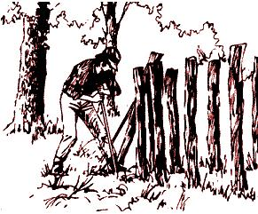
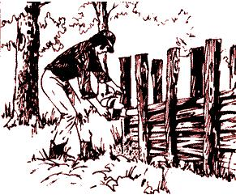

Here's a way to cut firewood that not only increases productivity on a cords-per-day basis, but makes the job easier too. This secret allows you to saw a number of logs, slabs or whatever at once ... so you won't have to reposition yourself and your tools every time you cut a piece to proper firebox length.
To use the method, you need to own or have access to the following: a maul or sledgehammer, a steel bar about five feet in length (for starting postholes), eight or ten fenceposts five to seven feet long and a chain saw.
OK. Choose a spot for the cutting operation. Since you're going to the trouble of driving eight or more posts, the location should be at least somewhat permanent. Pick a site that's handy for the unloading of your truck or other wood-hauling vehicle, and close to the shed where the cut fuel will be stored.
Now drive the posts. To do so with a sledge or maul, you need "starter" holes ... and that's where the steel bar comes in. Take a firm grip on the rod, ram it down into the spot where your first upright is to go and move it back and forth sideways to widen the opening. Continue this operation until the hole is around eighteen inches deep (width is relatively unimportant). Next, start three more holes in a straight line with the first. If your logs are long, you may want to set five or even six posts in each row. The distance between excavations should be the same as the desired length of firewood ... in my case, eighteen inches.
Go ahead and drive the four to six posts with your maul, just far enough into the ground to anchor them securely. Then make an imaginary mark parallel to the row and about twelve inches away (farther if your logs are fat), and hammer in a second line of stakes, each one directly opposite its counterpart in the first line of uprights.
That's it! Your woodsman's aid is ready to use. Take your logs or slabs and lay them lengthwise between the two lines of posts (stacking the firewood to just below the top of the holders). Then start the chain saw and-after centering your cut in the middle of the gap between two sets of stakes-slice right down through the whole pile. Repeat this action in the next bay, the one after that, etc.
As you near the bottom of each cut, take care not to run your saw through the undermost log and damage its chain on the dirt and stones beneath. In fact, it's a good idea to leave a large uncut timber or railroad tie on the ground between the lines of posts as insurance.
You'll be amazed how much this simple trick shortens the time and work of preparing firewood. In fact, when you use my system, it'll take you longer to stack your wood in the shed than it'll take you to cut it!
|
 Making a ""starter"" hole with a steel bar, then driving the post with a maul is much easier than digging a hole to fit. |
 A week's supply of wood can be cut in minutes with this method. |
|